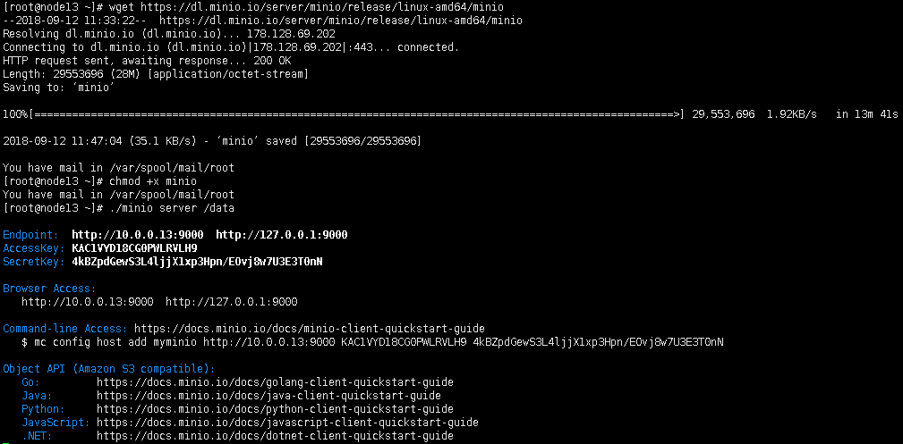
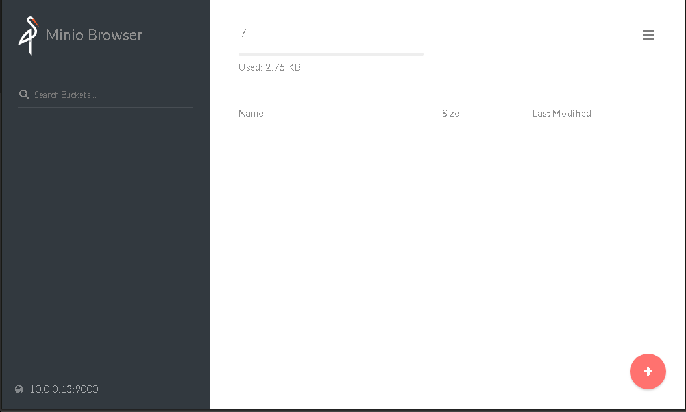
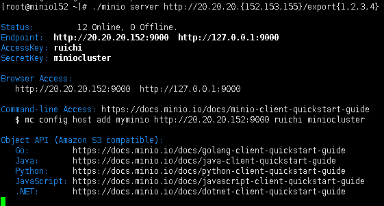

- 数据保护：引入纠删码来防范节点宕机和位衰减，部署分布式minio最少需要4块硬盘。
- 高可用：集群中部署了n块硬盘，当不少于n/2块硬盘在线时，存储的数据就是安全的。创建新对象需要至少n/2+1块硬盘。
- 限制：分布式minio单租户要求最少两台，最多32台服务器，但是对这些服务器中共享硬盘的个数没有限制。
- 一致性：在分布式和单机模式下，minio的读写操作都严格遵循 read-after-write 一致性原则。
分布式minio系统中每台机器都需要安装Minio（官方文档）
以下是安装过程（centos7-64bit)
wget https://dl.minio.io/server/minio/release/linux-amd64/minio
chmod +x minio
./minio server /data

浏览器访问http://127.0.0.1:9000 或 http://10.0.0.13:9000 ,用AccessKey和SecretKey登录，Minio界面如下图：

注意：
1. 执行Minio命令前，先将MINIOACCESSKEY和MINIOSECRETKEY在所有节点上export到环境变量；
2. 所有运行Minio的节点需要在相同的环境下，即相同的操作系统和相同数量的硬盘；
3. 分布式Minio需要使用空目录；
4. 运行分布式Minio的服务器的节点时间差不能超过3秒，可以使用NTP来保证服务器间的时间一致性。
用来运行minio服务的三台机器分别为20.20.20.152, 20.20.20.153, 20.20.20.155，这三台机器都安装了minio，以下的操作需要分别在三台机器上执行（官方文档）：
创建存储路径
mkdir /export{1,2,3,4}
开放80和9000端口
firewall-cmd --add-port=80/tcp --permanent
firewall-cmd --add-port=9000/tcp --permanent
firewall-cmd --reload
设置环境变量accesskey和secretkey
export MINIO_ACCESS_KEY=ruchi
export MINIO_SECRET_KEY=miniocluster
启动服务
./minio server http://20.20.20.{152,153,155}/export{1,2,3,4}

后台运行服务(可选）
./minio server http://20.20.20.{152,153,155}/export{1,2,3,4} > minio.file 2>&1 &